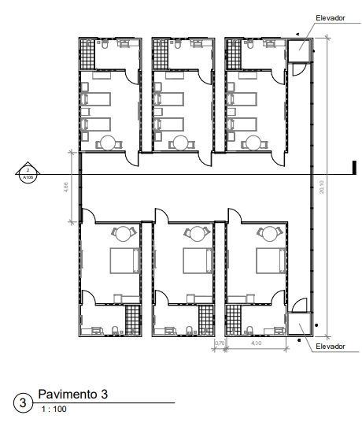

Projeto
Hotel Refúgio Alba
Localizado na Vila Independência, próximo ao Parque Dom Quixote, no munícipio de
Sorocaba-SP, o terreno conta com uma área de aproximadamente 1.400m². Situa-se em
um bairro de uso misto de média densidade, propínquo ao centro expandido da cidade.
O projeto conta com 12 unidades de 30m², sendo 6 dormitórios individuais e de casal,
dispostas à Norte e equipadas com suíte e serviço de quarto; recepção com acesso
principal e ao estacionamento; área de serviço para organização das funcionalidades do
hotel; club house com piscina e restaurante.
O Hotel Refúgio Alba, preza pelos pequenos detalhes da vida e a apreciação destas,
que muitas vezes passam despercebidas no estresse do cotidiano. Das brincadeiras e
sonhos de infância ao projeto, o conceito buscado vai muito além do significado das
palavras. A sensação produzida pelo refúgio não se restringe a fortificação e quarentena,
ela evidencia tranquilidade. O Alba volta às memórias pessoais de seus usuários através
de elementos verticais que instigam a imaginação, sejam eles presentes na fachada ou
subentendidos, como aspectos materiais que remetem sensações de aconchego e
conforto...
ANÁLISE DE INSOLAÇÃO
Para o estudo realizado ao lado, levantou-se as principais edificações no entorno em um raio de 100m, consideradas como catalisadoras ou obstáculos para a implantação do projeto. Todas possuem 1 pavimento, ao que se considera-se 3m de altura. Diante da análise pode-se observar que mesmo próximas ao edificado, não exercem forte influência no mesmo, já que suas dimensões são baixas. Com relação à incidência solar nas fachadas do projeto descritas no item 10 e analisadas através do quadro a baixo, nota-se a possibilidade de colocação de piscinas e aberturas à Noroeste, enquanto que à Sudeste é evitado tal colocação, visto que a "duração do sol" na fachada é pouca.
| QTD. DE HORAS DE SOL NAS FACHADAS | |||
|---|---|---|---|
| Solstício de inverno | Solstício de verão | Equinócio | |
| Nordeste | 6h20 - 13h30 | 5h00 - 12h00 | 6h00 - 12h40 |
| Noroeste | 7h00 - 18:h00 | 12h00 - 18h00 | 9h40 - 18h00 |
| Sudoeste | 14h10 - 17h30 | 12h00 - 18h10 | 13h00 - 18h30 |
| Sudeste | 5h00 - 7h00 | 6h30 - 12h00 | 6h00 - 9h10 |
Ventilação
Durante o dia, o predomínio de ventos se estabelece na direção Sul-Norte entre 2-4 m/s e com frequência de 5,5% ao Sul. Há uma variação notável na direção Noroeste-Sudeste, o que possibilita flexibilidade na posição das aberturas do projeto. Nesse sentido, não é recomendado que as aberturas sejam posicionadas à Leste-Oeste, já que sucederá em uma perda de ventilação significativa devido as barreiras construtivas presentes em ambas direções. Durante a noite, há um forte predomínio de ventos ao Sul entre 2-4 m/s com frequência de 16,08%, sendo os demais pontos cardeais insignificantes devido aos baixos valores apresentados. À exceção do Sudeste, que se destaca comparado às menores medições. O terreno recebe diretamente os ventos do Sul (maior intensidade), em razão do espaço nessa direção não apresentar nenhum tipo de "barreira", por ser destinado a uma área vazia. Dentro do raio de 200m, barreiras de vegetação são concentradas em pontos que interferem principalmente em Noroeste e Sudeste, fazendo com que o vento desvie de sua rota. No caso da direção Sudeste, as vegetações estabelecem um caminho para os ventos chegarem até o terreno. Já no raio de 100m, as barreiras são mais próximas do terreno, isto é, as construções presentes em Leste, Oeste e Noroeste diminuem o fluxo dos ventos. O caminho proporcionado pelas vegetações e edificações em Norte, em conjunto com o terreno vazio à Nordeste, formam um sentido para os ventos dessas direções.
Localizações: Estacionamento e piscina
A localização do estacionamento foi atribuída a dois fatores significativos, primeiro - e
fundamental -, é nele em que situa-se o pavimento térreo, ou seja, o nível 0 em relação
a
topografia. Isso deve-se a maior facilidade do automóvel dirigir-se até o local de
permanência, sem grandes declividades. O segundo fator corresponde a incidência de luz
no espaço, visto que, o mesmo está em grande parte do ano sombreado, isto é, previne-se
dos
carros dos hóspedes aquecerem demais.
O projeto em seu estado inicial não considerava a topografia e, por isso a área
destinada à piscina ficava inclausurada em um extenso muro de arrimo com cerca de 5m
de altura. A alteração adotando os declíveis, possibilitou uma melhor configuração.
Os pavimentos são dispostos em diferenças de 1,50m, sendo 10cm de piso que
resultam em 1,60m.
Recepção, restaurante e áreas de serviço
A localização da recepção, restaurante e áreas de serviço foram atribuídas ao pavimento 1 para possibilitar o acesso do estacionamento ao atendimento. Dessa forma, assim que os hóspedes estacionarem o carro, podem se dirigir à recepção e realizar o check in, da mesma forma para o check out. Ademais, essa região fica protegida do calor graças à sua posição, fazendo com que os funcionários que permanecem constantemente na região são sejam prejudicados com a incidência solar.
Dormitórios
Pode-se dizer que o pavimento 2 e 3 nortearam a disposição dos demais ambientes, já que o objetivo era concetrar a área de lazer em um lugar bem arejado e que estivesse sempre iluminado e, as unidades de quartos de forma que recebecem luz, ao tempo que, durante a noite o ambiente não fosse prejudicado por desconforto térmico por frio. Entretanto, somente os quatro dormitórios foram privilegiados iluminação direta, enquanto os demais foram parcialmente privadas dessa luminosidade. Assim, a solução encontrada foi a implementação de aberturas à Sudoeste-Nordeste (no banheiro e outra no mesmo sentido na parede divisória).
